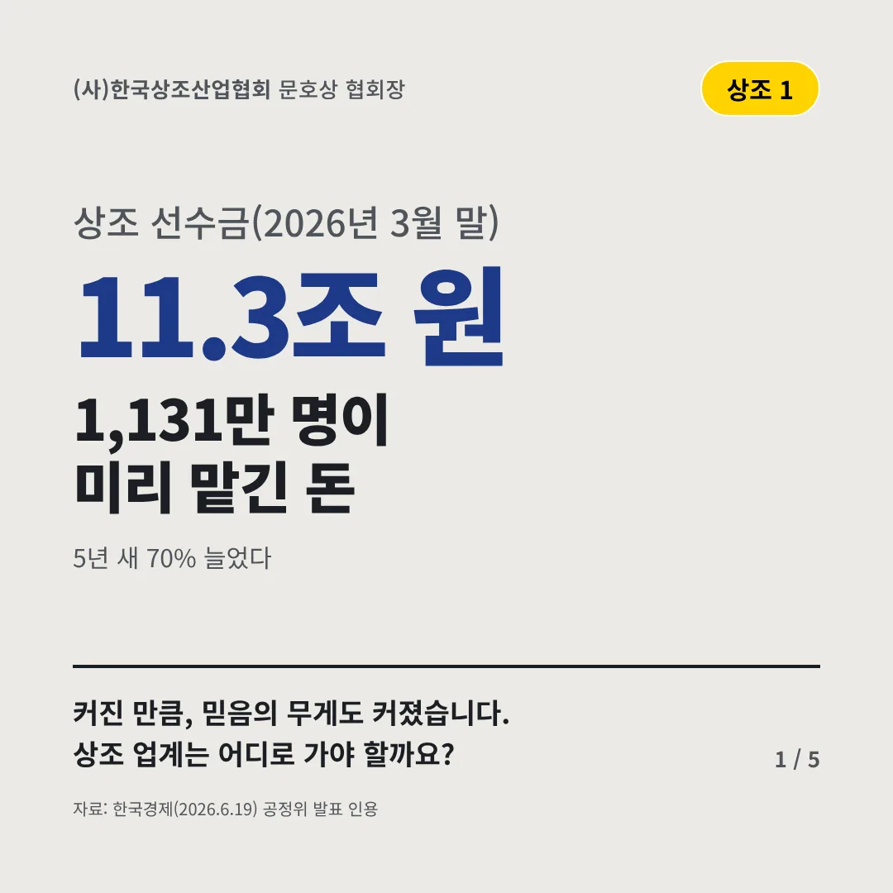
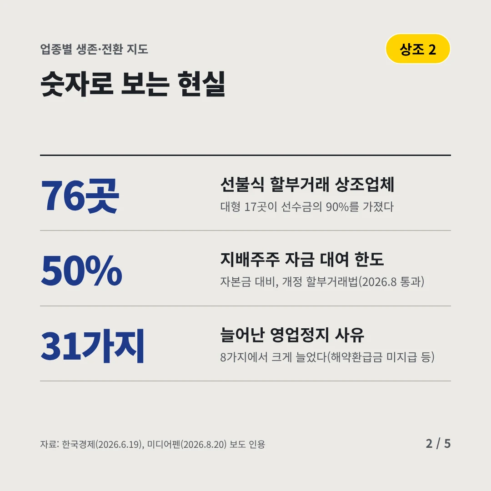
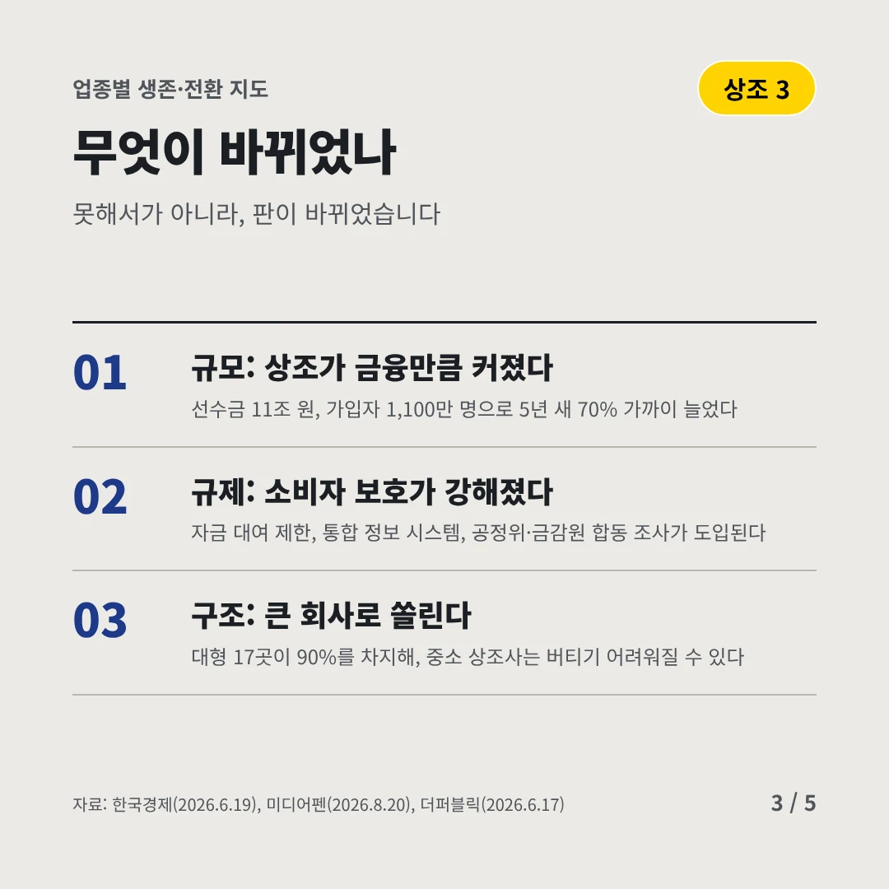
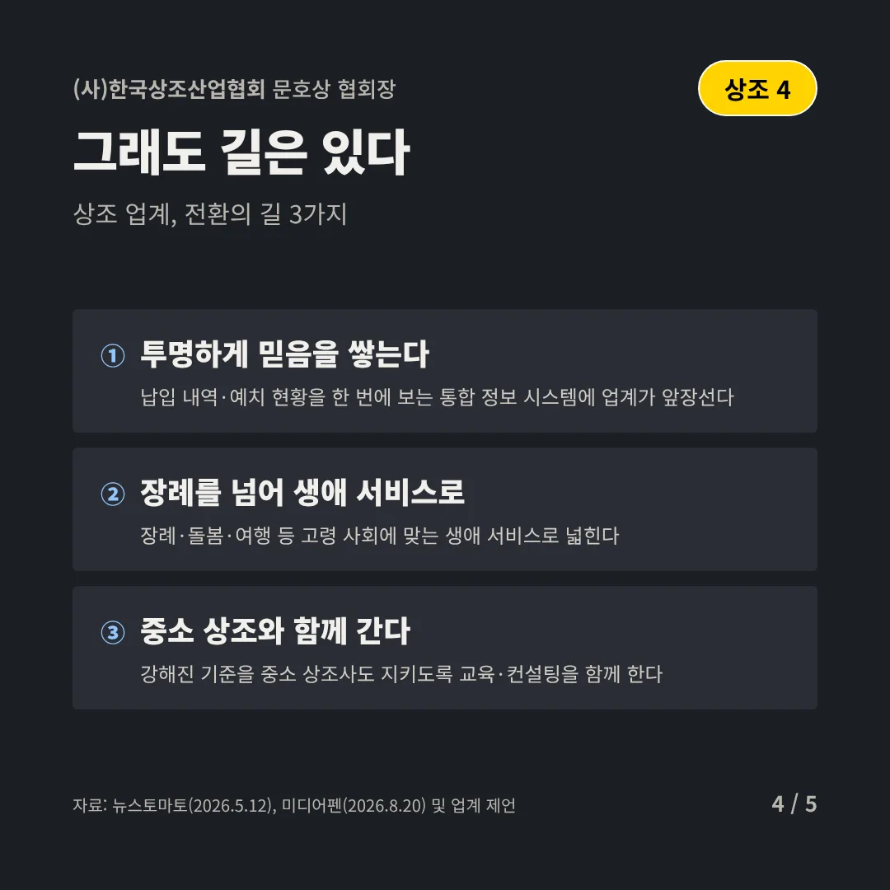
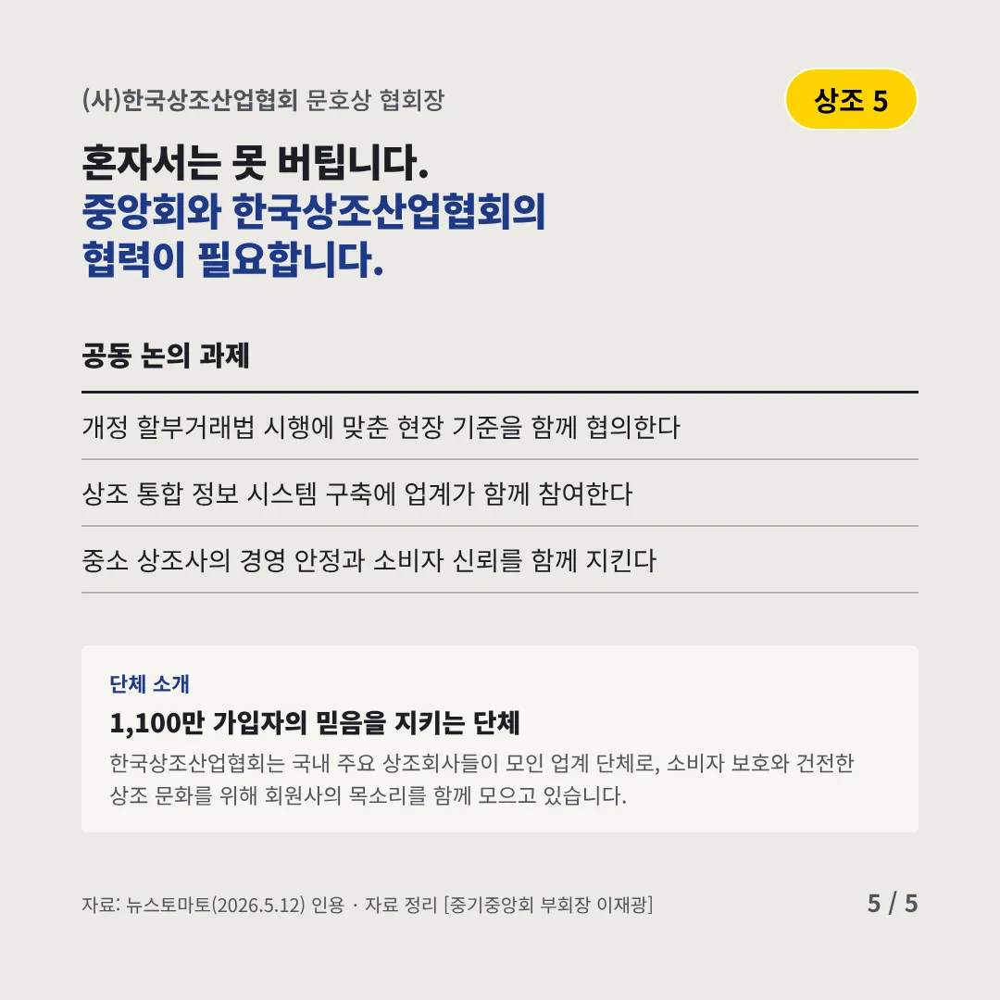
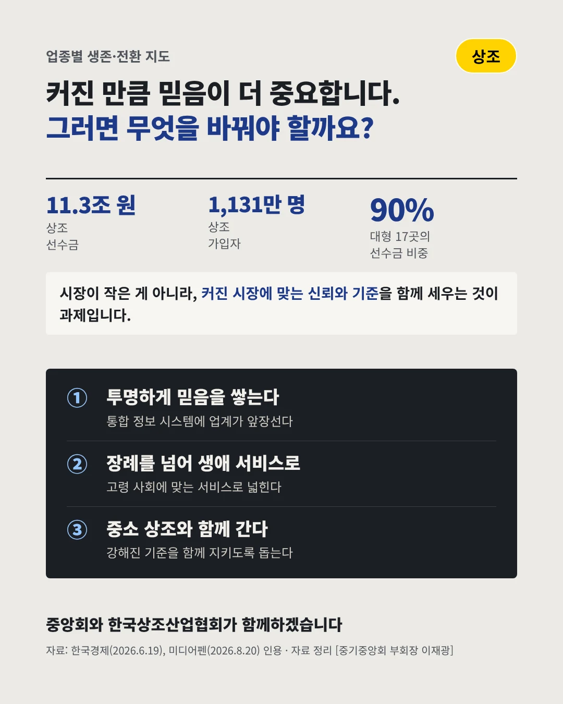

(사)한국상조산업협회
1,131만 명이 미리 맡긴 돈
11.3조 원 상조 선수금(2026년 3월 말)






커진 만큼, 믿음의 무게도 커졌습니다. 상조 업계는 어디로 가야 할까요?
숫자로 보는 현실
- 76곳선불식 할부거래 상조업체대형 17곳이 선수금의 90%를 가졌다
- 50%지배주주 자금 대여 한도자본금 대비, 개정 할부거래법(2026.8 통과)
- 31가지늘어난 영업정지 사유8가지에서 크게 늘었다(해약환급금 미지급 등)
무엇이 바뀌었나
- 규모: 상조가 금융만큼 커졌다선수금 11조 원, 가입자 1,100만 명으로 5년 새 70% 가까이 늘었다
- 규제: 소비자 보호가 강해졌다자금 대여 제한, 통합 정보 시스템, 공정위·금감원 합동 조사가 도입된다
- 구조: 큰 회사로 쏠린다대형 17곳이 90%를 차지해, 중소 상조사는 버티기 어려워질 수 있다
그래도 길은 있다
- 투명하게 믿음을 쌓는다납입 내역·예치 현황을 한 번에 보는 통합 정보 시스템에 업계가 앞장선다
- 장례를 넘어 생애 서비스로장례·돌봄·여행 등 고령 사회에 맞는 생애 서비스로 넓힌다
- 중소 상조와 함께 간다강해진 기준을 중소 상조사도 지키도록 교육·컨설팅을 함께 한다
한 장 요약

단체 소개
한국상조산업협회는 국내 주요 상조회사들이 모인 업계 단체로, 소비자 보호와 건전한 상조 문화를 위해 회원사의 목소리를 함께 모으고 있습니다.
자료: 한국경제(2026.6.19), 미디어펜(2026.8.20), 더퍼블릭(2026.6.17), 뉴스토마토(2026.5.12)